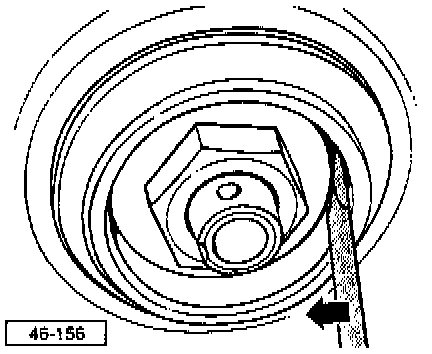

With Drum Brakes
Wheel Bearing and Axle (Drum Brakes), Servicing

9 Hex nut
- Tighten to adjust wheel bearing free play, refer to Fig. 4

Fig. 4 - Wheel Bearing Play, Adjusting
- The clearance is correctly adjusted when the thrust washer can be moved slightly using finger pressure against a screwdriver (do not pry or twist screwdriver).
- Secure with lock ring and new cotter pin.